Referenzen.
Achtzehn Projekte von 2006 bis heute, von Tunneln und Staumauern bis zu Metros, Flughäfen und Anlagen, in acht Ländern.

Nationalstrassenabschnitt
Senior-Bauingenieur
Zum Projekt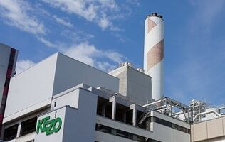
Neubau Kehrichtverwertungsanlage
Projektleiter Bau auf Bauherrenseite
Zum Projekt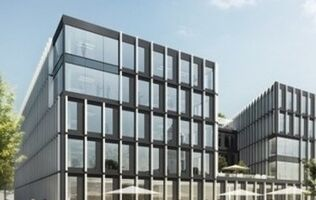
Technologiezentrum Qubes
Leiter Projektmanagement HLKK
Zum Projekt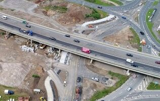
Umbau Kaiserleikreisel
Projektmanagement Leitungsbau
Zum Projekt
The Circle am Flughafen Zürich
Leiter Projektmanagement
Zum Projekt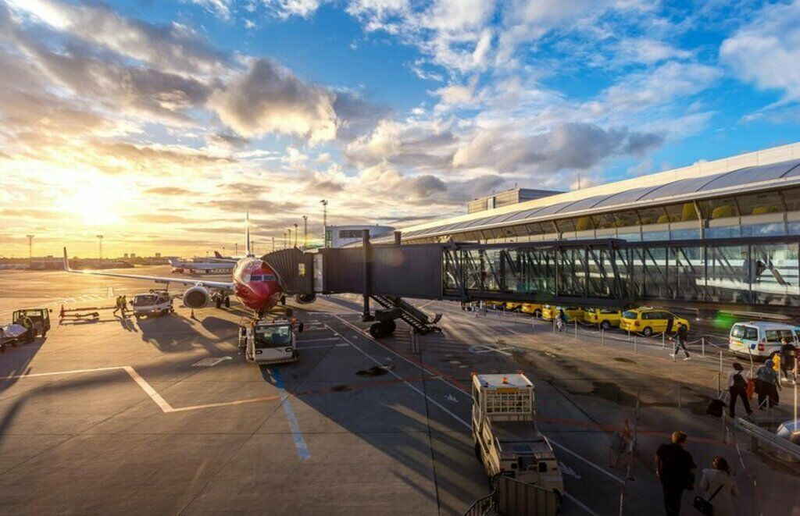
Internationaler Flughafen
Director Engineering, Leiter der Engineering-Abteilung
Zum Projekt
Angebot Autobahnzubringer
Freischaffender Bauingenieur in der Kalkulation eines führenden Schweizer Bauunternehmens
Zum Projekt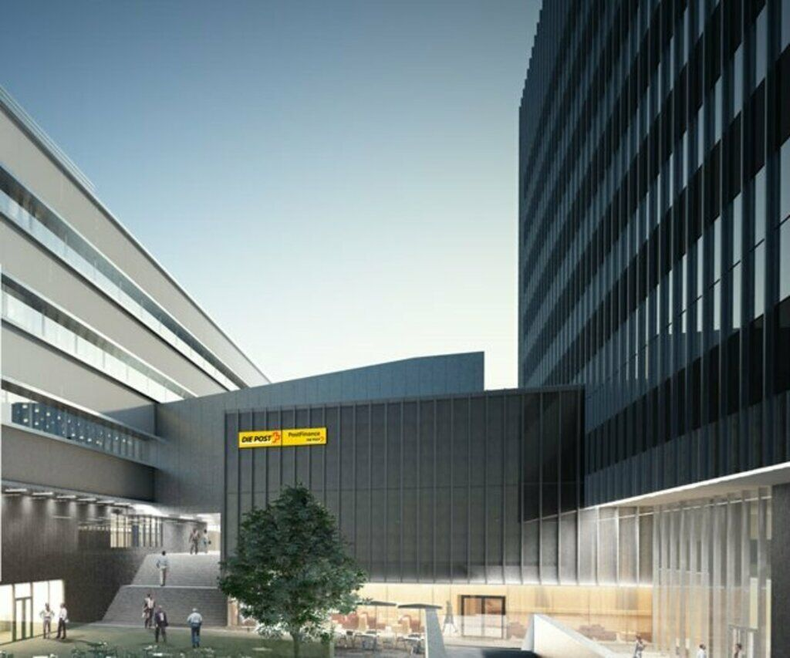
PostParc
Senior Contract Manager, Generalunternehmer
Zum Projekt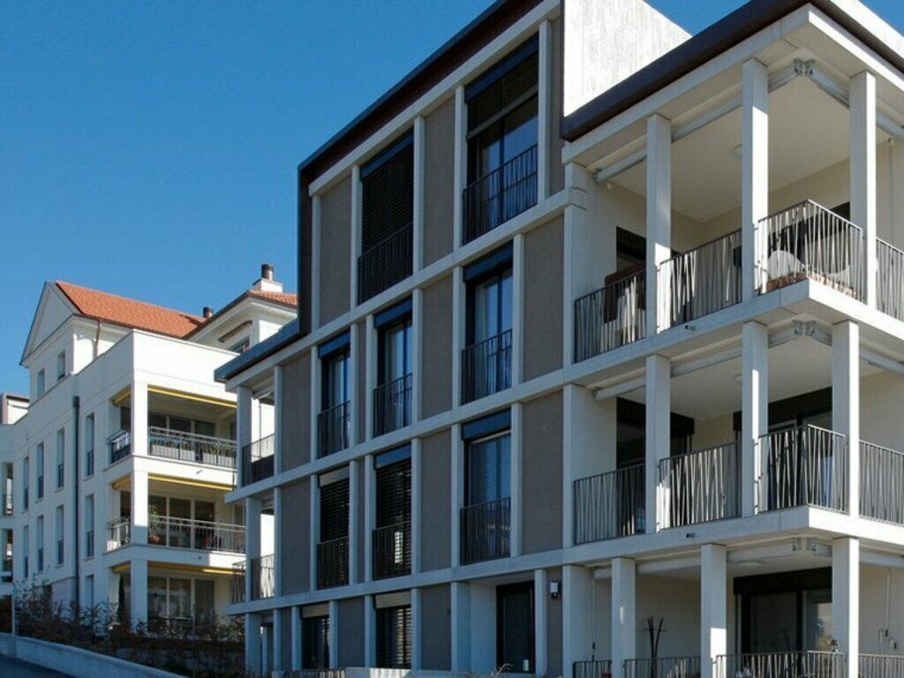
Wohnüberbauung Schönberg Ost
Senior Contract Manager auf Seite des Generalunternehmers
Zum Projekt
Pumpspeicherkraftwerk Nant de Drance
Claim- und Contract Manager auf Seite des Generalunternehmers
Zum Projekt
Pumpspeicherwerk Linth-Limmern
Claim- und Contract Manager auf Seite des Generalunternehmers
Zum Projekt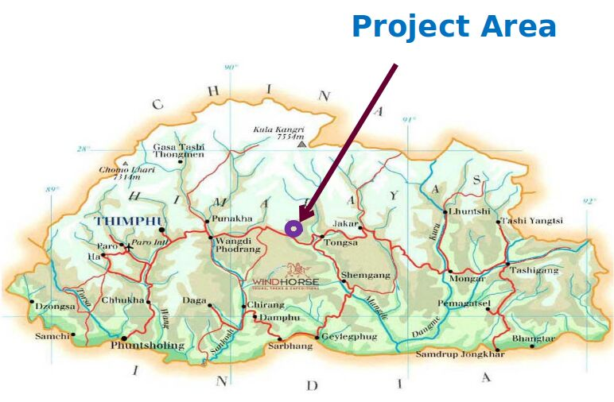
Wasserkraftwerk Mangdechhu, Tunnel
Senior Contract Manager
Zum Projekt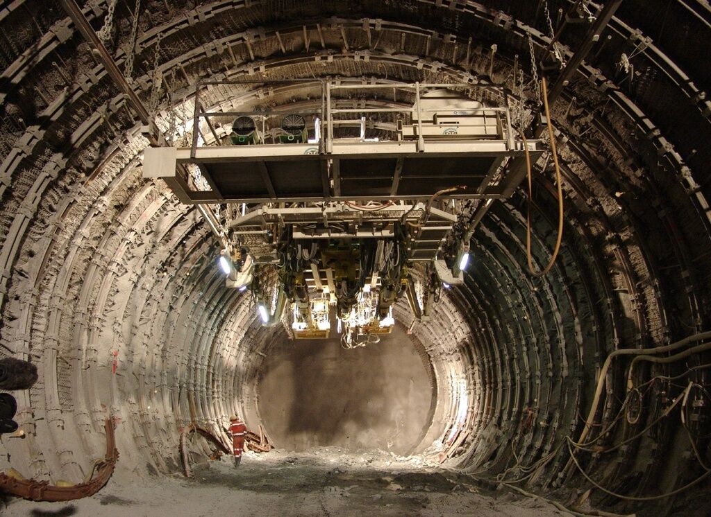
Gotthard-Basistunnel
Leiter Vertragsmanagement auf Bauherrenseite
Zum Projekt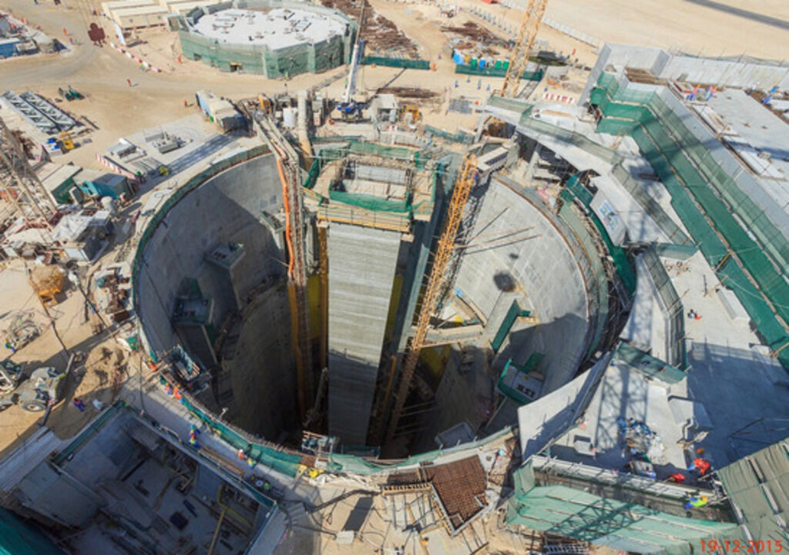
STEP Abwassertunnel
Senior Project und Contract Manager, Unternehmer
Zum Projekt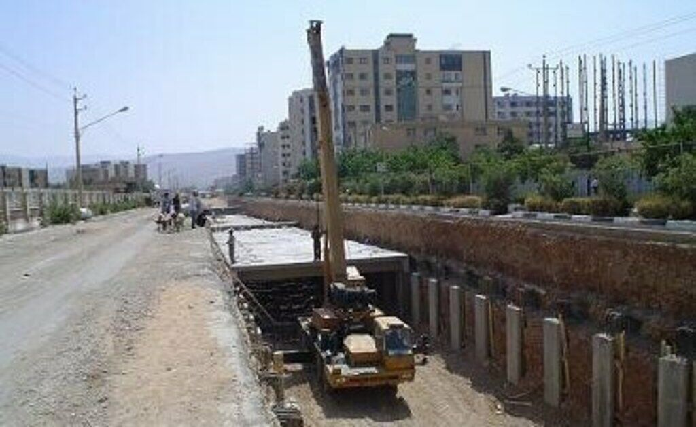
Metro Linie 2
Senior Project und Contract Manager auf Seite des Generalunternehmers
Zum Projekt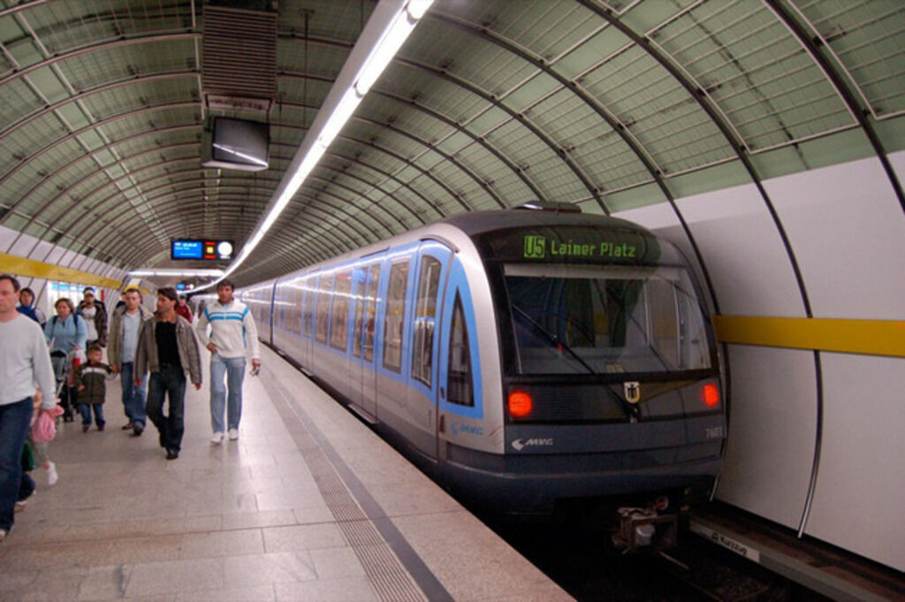
Metro Linie 2
Senior Project und Contract Manager im Ingenieurkonsortium
Zum Projekt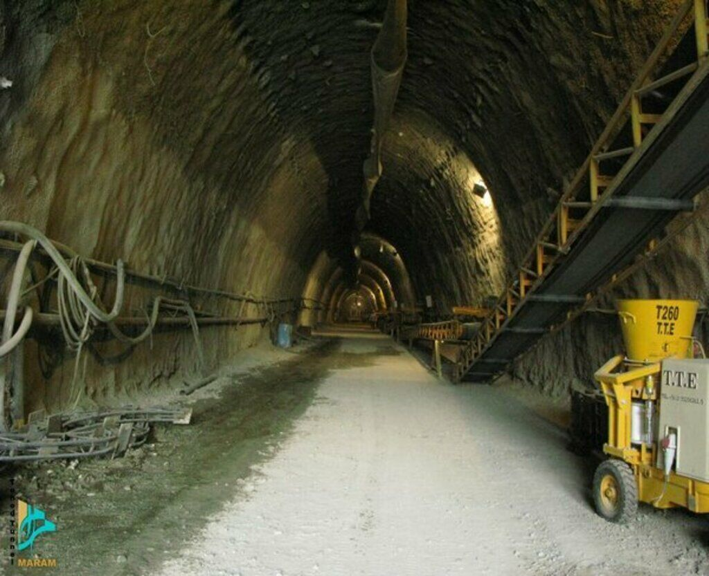
Tohid-Tunnel
Senior Project und Contract Manager auf Seite des Generalunternehmers
Zum Projekt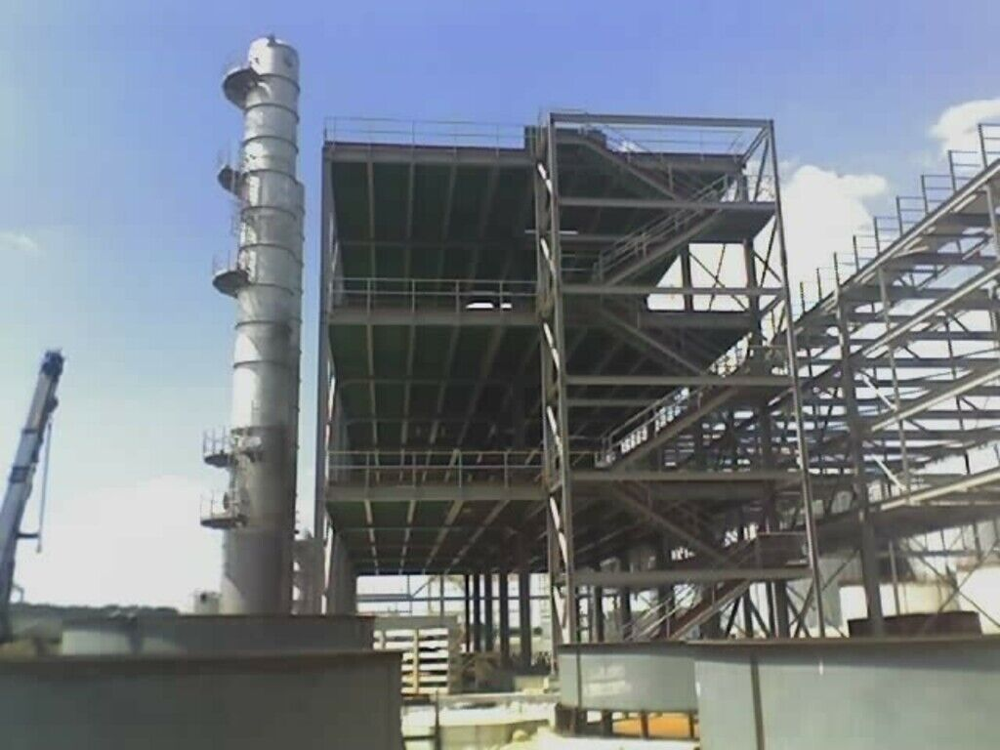
Bioethanolanlage
Senior Contract Manager, Generalunternehmer
Zum ProjektDer Vortrieb, Jahr für Jahr
2011
Station
Projekte in diesem Jahr
Für dieses Jahr ist kein Referenzprojekt aufgeführt; links steht, wo er tätig war.
- Technologiezentrum QubesMünchen · 2022 · Leiter Projektmanagement HLKK
- Neubau KehrichtverwertungsanlageHinwil · 2022-2028 · Projektleiter Bau auf Bauherrenseite
- Umbau KaiserleikreiselOffenbach · 2021-2022 · Projektmanagement Leitungsbau
- The Circle am Flughafen ZürichFlughafen Zürich · 2020-2021 · Leiter Projektmanagement
- NationalstrassenabschnittSüdostschweiz · 2020-2033 · Senior-Bauingenieur
- Internationaler FlughafenRegion Osteuropa · 2019 · Director Engineering, Leiter der Engineering-Abteilung
- Angebot AutobahnzubringerKanton Aargau · 2018 · Freischaffender Bauingenieur in der Kalkulation eines führenden Schweizer Bauunternehmens
- PostParcBern · 2017 · Senior Contract Manager, Generalunternehmer
- Wohnüberbauung Schönberg OstBern · 2015-2016 · Senior Contract Manager auf Seite des Generalunternehmers
- Pumpspeicherkraftwerk Nant de DranceFinhaut · 2013-2014 · Claim- und Contract Manager auf Seite des Generalunternehmers
- Pumpspeicherwerk Linth-LimmernTierfehd · 2013-2014 · Claim- und Contract Manager auf Seite des Generalunternehmers
- Wasserkraftwerk Mangdechhu, TunnelTrongsa · 2013-2014 · Senior Contract Manager
- Gotthard-BasistunnelLose Sedrun, Faido, Bodio · 2011-2013 · Leiter Vertragsmanagement auf Bauherrenseite
- STEP AbwassertunnelAbu Dhabi · 2010-2011 · Senior Project und Contract Manager, Unternehmer
- Metro Linie 2Maschhad · 2009-2011 · Senior Project und Contract Manager auf Seite des Generalunternehmers
- Metro Linie 2Ho-Chi-Minh-Stadt · 2009-2011 · Senior Project und Contract Manager im Ingenieurkonsortium
- Tohid-TunnelTeheran · 2008-2010 · Senior Project und Contract Manager auf Seite des Generalunternehmers
- BioethanolanlageLacq · 2006-2007 · Senior Contract Manager, Generalunternehmer